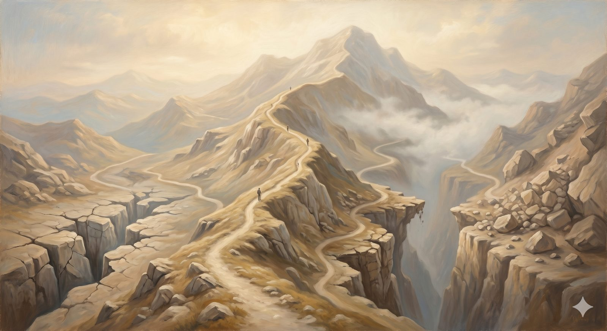

The Rest of the Bestiary
The rest of the slope's perils — the remaining classical heresies, the two-natures errors, and later counterfeits down to the very modern remaking of God in our own image.
"For my thoughts are not your thoughts, neither are your ways my ways, declares the LORD." Isaiah 55:8 (ESV)
Three perils a pilgrim is almost certain to meet on the open road have their own pages — the diminished Son, the self-sufficient will, the secret knowledge. But the slope of Mount Error is older and more crowded than any short list, and the shepherds would not let a traveler descend imagining that three exhaust the dangers. What follows is the rest of the bestiary: the remaining classical errors, and several more that the creeds in the armory were forged to answer. None gets the full treatment here; each gets enough that you would know it if you met it. The pattern, by now, is familiar — every one of them begins from a real question and answers it by sacrificing something the gospel cannot spare.
The remaining classical errorsThree the early church named
Marcionism — "the God of the Old Testament is a different God." Marcion of Sinope, in the second century, taught that the wrathful, demanding God of the Hebrew Scriptures was a distinct and inferior deity from the loving Father of Jesus, and he produced the first attempt at a Christian canon by cutting Luke down and removing every passage that tied Jesus to the God of Israel. The real question is one every serious reader feels: how do the hard passages of the Old Testament — the commanded slaughters, the imprecatory psalms — square with the God revealed in Christ? But Marcion's answer is the nuclear option, simply declaring them a different God's work, and it founders on the New Testament's own insistence that the Father of Jesus is the God of Abraham, Isaac, and Jacob, that Jesus came not to abolish the Law and the Prophets but to fulfill them. Its modern echo is any Christianity quietly embarrassed by the Old Testament, keeping a gentle Jesus while discarding the God he called Father.
Docetism — "Jesus only seemed to be human." From the Greek dokein, "to seem," this held that Jesus was fully divine but only appeared to have a body — the hunger, the suffering, the death all an appearance, a divine costume rather than a real descent into flesh. The instinct was to protect God's dignity from the indignities of matter. But if Jesus only seemed to suffer, the atonement is theater; if his body was not real, neither was the resurrection. John seems to write directly against it: every spirit that confesses that Jesus Christ has come in the flesh is from God. And the great pastoral comfort of Hebrews — that we have a high priest who was tempted in every way as we are — turns to decoration if the humanity was only apparent.
Modalism — "Father, Son, and Spirit are just three names for the same person." Also called Sabellianism, this teaches that God is one person playing three roles at different times: Father in creation, Son in the incarnation, Spirit after Pentecost — one actor changing costumes. It is the error that arises most often by accident, in well-meaning preaching, by anyone trying to make the Trinity simpler arithmetic. But it cannot account for the scenes where all three are present at once — most plainly at Jesus' baptism, where the Son comes up from the water, the Spirit descends as a dove, and the Father speaks from heaven. If they are one person in three modes, then God is simultaneously in the river, in the air, and in the voice — as himself, to himself. The love that the Father and Son share before the world began collapses into a soliloquy.
In plain terms
These three miss in three directions: Marcionism splits God into two, Docetism makes Jesus' body a costume, and Modalism flattens the three persons into one wearing masks. Each one breaks something the gospel needs — the unity of God across both Testaments, the reality of the cross, or the genuine relationship of Father, Son, and Spirit.
The two-natures errorsHow Chalcedon's breastplate was forged
Once the church confessed at Nicaea that the Son is fully God, a fresh cluster of perils opened on the question of how he could also be fully man — the very errors the Chalcedonian breastplate in the armory was hammered out to fence. Apollinarianism proposed that in Jesus the divine Word simply replaced the human mind or soul — so that he had a human body but not a fully human inner life. The church saw the fatal flaw at once, in a principle that became a watchword: that which is not assumed is not healed. If Christ did not take a full human mind, then the human mind is not redeemed. He had to become completely what we are in order to save the whole of what we are.
Pressing from the opposite sides came two more. Nestorianism so emphasized the distinction between the divine and human in Christ that it threatened to split him into two persons loosely cooperating — which is why the church resisted dividing the one Lord into a divine subject and a separate human one. And Eutychianism (or monophysitism) erred the other way, blending the two natures into a single hybrid in which the humanity was swallowed up by the divinity, like a drop of wine lost in the sea. Chalcedon, in 451, fenced both ditches at once with its four great negatives: two natures in one person, without confusion, without change, without division, without separation. Not blended, not split — both fully present in one Christ.
Later counterfeitsErrors with newer names
Socinianism — a sixteenth-century movement, named for the Italian Sozzini, and an ancestor of modern Unitarianism — denied the Trinity, the full deity of Christ, and, crucially, the substitutionary atonement, arguing that God could simply forgive without the cross and that Jesus saves chiefly as a moral example and teacher. It shares Arianism's diminished Christ but adds a diminished cross, and it collapses precisely where it most prides itself on reasonableness: a God who merely overlooks sin without dealing with it is neither just nor, finally, loving, and a Jesus who only shows us the way cannot bear what we could never carry.
Open theism is a far more recent and more subtle peril, arising among some who hold much else that is orthodox. To protect human freedom and to make sense of God's grief over sin, it proposes that God does not exhaustively know the future free choices of his creatures — that the future is genuinely open even to him. The pastoral instinct, a desire to take human freedom and divine relationship seriously, is understandable. But it trades away the God of the prophets, who declares the end from the beginning and stakes his very deity on knowing what is to come, and it quietly undercuts the comfort of Romans 8 — for a God who is improvising cannot guarantee that all things will work together for good. The God who saves must be the God who sees the whole road.
Anthropotheism — literally "man-god-ism" — is less a single historical sect than a recurring tendency, and in some ways the most modern of all: the remaking of God into an enlarged image of ourselves. Where the older heresies erred on fine points of metaphysics, this one simply assumes that God's mind is our mind grown large — that his values are our culture's values with the volume raised, that he wants what we want, blesses what we prefer, and would never offend the sensibilities of the age. It is the engine beneath much else on this slope: the domesticated "greatest teacher" of soft Arianism, the affirming life-coach of therapeutic deism, the god of New Age self-discovery. Scripture's answer is the thunderclap of God's own voice: my thoughts are not your thoughts, neither are your ways my ways. The God who is merely us, enlarged, can never confront us, never surprise us, and never save us — because he is only ever the echo of our own voice.
Every counterfeit on this slope begins from a real question and answers it by sacrificing something the gospel cannot spare.
The thread that ties themOne true thing, turned up too loud
Stand back from the whole bestiary and a single pattern runs through it. Heresy is rarely a clean lie that anyone could spot. It is almost always one true thing turned up until it drowns out all the others — the oneness of God pressed until the Son is lost, human freedom guarded until grace is gone, God's transcendence protected until the incarnation evaporates, his nearness emphasized until he becomes merely us. The orthodox faith is harder than any of them precisely because it refuses the simplification, holding the whole chord rather than a single ringing note. That is what the creeds in the armory are for: not to make the faith complicated, but to keep every string in tune at once.
And so the shepherds bring the pilgrims back from the edge. To know these perils is not to live in fear of them but to walk the ridge with eyes open, able to recognize an old counterfeit however new its clothing. There is one more height in this country the shepherds will show — not an error to avoid, but a sobering sight meant to keep a pilgrim walking faithfully to the end: the peak called Caution.